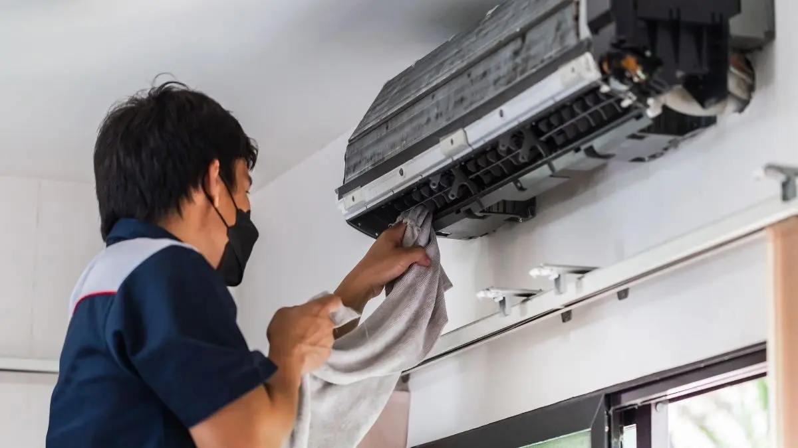

تنظيف مكيفات حي السويدي الرياض 0541145506 بأفضل الأسعار

تعتبر المكيفات عنصر أساسي في المنازل والمكاتب ولكنها قد تتحول إلى مصدر غير مرئي لتراكم الملوثات إذا لم يتم صيانتها بانتظام.
إن إهمال تنظيف المكيفات يؤدي إلى تراكم الغبار والعفن والبكتيريا داخل الفلاتر والمكونات الداخلية مما يسهم في تدهور جودة الهواء الداخلي وهذا التراكم لا يقتصر تأثيره على تقليل كفاءة التبريد فحسب بل يمكن أن يسبب مشكلات صحية مثل الحساسية وأمراض الجهاز التنفسي.
يؤدي تنظيف وصيانة المكيفات بانتظام إلى تحسين كفاءة الجهاز مما يساهم في تقليل استهلاك الطاقة وإطالة عمره الافتراضي كما أن الصيانة الدورية تضمن تدفق هواء نقي خالي من الملوثات مما يخلق بيئة صحية أكثر للسكان
لذلك ينصح بالاعتماد على شركة نقل الرياض لخدمات تنظيف مكيفات حي السويدي الرياض لضمان أداء مثالي للمكيفات دون تراكم الأتربة أو الجراثيم ويمكنك التواصل مع شركة نقل الرياض عبر 0541145506 او من خلال الواتساب على هذا الرابط.
إضافةً إلى ذلك فإن صيانة مكيفات حي السويدي الرياض تلعب دور هام في الكشف المبكر عن أي أعطال محتملة مما يمنع حدوث تلف مفاجئ قد يتطلب إصلاحات مكلفة لذلك الاستثمار في تنظيف المكيفات ليس مجرد رفاهية بل هو ضرورة للحفاظ على جودة الهواء وتعزيز راحة السكان.
أضرار تراكم الأتربة والغبار داخل المكيفات وتأثيرها على الأداء
تراكم الأتربة والغبار داخل وحدات التكييف يعد من أخطر المشكلات التي تهدد كفاءة المكيفات وأداءها العام.
مع مرور الوقت تتراكم جزيئات الغبار داخل الفلاتر والمبخر والمراوح الداخلية مما يعيق تدفق الهواء بشكل طبيعي هذا الانسداد يؤدي إلى إجهاد المكيف وزيادة استهلاك الطاقة حيث يضطر الجهاز للعمل بجهد أكبر لتبريد الهواء.
بالإضافة إلى ذلك فإن تراكم الأوساخ داخل المكيف يخلق بيئة مثالية لنمو الفطريات والبكتيريا مما قد يتسبب في انتشار الروائح الكريهة داخل المكان.
والأسوأ من ذلك أن استنشاق الهواء الملوث بالأتربة والعفن قد يؤدي إلى مشاكل صحية خطيرة مثل الحساسية والتهابات الجهاز التنفسي وتهيج العيون.
لذلك فإن إهمال تنظيف المكيفات لا يقتصر ضرره على الأداء الفني فحسب بل يمتد ليؤثر على جودة الهواء وصحة الأفراد.
من الناحية الفنية يؤدي تراكم الأتربة إلى تآكل بعض المكونات الداخلية مثل الملفات والمراوح مما يزيد من احتمالية الأعطال المفاجئة لهذا السبب يوصى بالاستعانة بخدمات تنظيف مكيفات حي السويدي الرياض لضمان إزالة الرواسب العالقة داخل المكيف واستعادة كفاءته التشغيلية.
إجراء صيانة مكيفات حي السويدي الرياض بصفة دورية يساعد أيضًا في رصد المشكلات مبكرًا مثل التسريبات أو انخفاض كفاءة التبريد مما يمنع الحاجة إلى إصلاحات مكلفة في المستقبل.
إن العناية بالمكيفات ليست مجرد مسألة رفاهية بل هي ضرورة للحفاظ على بيئة مريحة وصحية وضمان تشغيل اقتصادي موفر للطاقة.
إقرأ ايضا : افضل شركة تنظيف مكيفات بحي حطين 0541145506
شركة نقل الرياض أفضل تنظيف مكيفات حي السويدي الرياض
تعدّ شركة نقل الرياض من الشركات الرائدة في مجال تنظيف مكيفات حي السويدي الرياض حيث تقدم حلولًا مميزة للحفاظ على كفاءة المكيفات وضمان هواء نقي داخل المنازل والمنشآت.
مع مرور الوقت تتراكم الأتربة والشوائب داخل وحدات التكييف مما يقلل من فعاليتها ويزيد من استهلاك الطاقة لهذا السبب توفر شركة نقل الرياض خدمات تنظيف احترافية باستخدام أحدث التقنيات والمعدات لضمان أداء مثالي للمكيفات.
تعتمد الشركة على معدات حديثة ومواد تنظيف آمنة لإزالة الأوساخ والرواسب العالقة داخل الفلاتر والملفات الداخلية مما يساعد في استعادة كفاءة التبريد وتقليل استهلاك الكهرباء.
يضم فريق العمل مهندسين وفنيين ذوي خبرة واسعة في صيانة مكيفات حي السويدي الرياض حيث يتمكنون من اكتشاف الأعطال المحتملة وإصلاحها قبل أن تتفاقم مما يوفر على العملاء تكاليف الإصلاح الباهظة.
تراكم الغبار داخل المكيفات يؤدي إلى انتشار الملوثات والروائح غير المرغوبة في الهواء ومن خلال تنظيف دوري شامل تضمن شركة نقل الرياض بيئة صحية خالية من الجراثيم والفطريات مما يقلل من خطر الإصابة بأمراض الجهاز التنفسي والحساسية.
إلى جانب التنظيف توفر الشركة خدمات صيانة مكيفات حي السويدي الرياض التي تشمل فحص غاز التبريد وتنظيف الوحدات الداخلية والخارجية والتأكد من كفاءة التوصيلات الكهربائية مما يضمن عمر افتراضي أطول للمكيف.
سواء كنت بحاجة إلى تنظيف دوري أو صيانة شاملة فإن شركة نقل الرياض هي الخيار الأمثل لضمان أداء مكيفاتك بكفاءة عالية احجز خدمتك اليوم واستمتع بهواء نقي وبارد دون القلق من الأعطال المفاجئة أو الاستهلاك المفرط للطاقة.
إقرأ ايضا : دينا نقل عفش حي السويدي بأفضل الأسعار 0541145506
خطوات شركة تنظيف مكيفات حي السويدي
تعتمد شركة نقل الرياض على خطوات مهنية مدروسة عند تنظيف مكيفات حي السويدي الرياض لضمان أفضل أداء للمكيف وجودة هواء عالية داخل منزلك، إليك أهم خطوات شركة تنظيف مكيفات حي السويدي الرياض:
- تقوم الشركة أولًا بعمل فحص شامل للمكيف للتأكد من كفاءة التبريد وتحديد إذا كان بحاجة للتنظيف فقط أو صيانة.
- فصل التيار الكهربائي قبل بدء عملية التنظيف لحماية الأجهزة والفني من مخاطر الكهرباء.
- فك فلاتر الهواء وغسلها جيدًا بالماء والصابون لإزالة الدهون والأتربة العالقة.
- تنظيف ملفات التبريد بإستخدام البخار أو مواد تنظيف مخصصة لإزالة الأتربة والغبار من الملفات مما يؤثر على كفاءة التبريد.
- تنظيف مروحة الوحدة الداخلية بعناية لتقليل الضوضاء وزيادة تدفق الهواء
- تعقيم فتحات الهواء للتخلص من الروائح الكريهة.
- قياس مستوى ضغط الغاز وفي حالة نقصه يتم إبلاغ العميل.
أسعار شركة تنظيف مكيفات حي السويدي
تتميز شركة نقل الرياض بتقديم خدمة تنظيف وصيانة مكيفات حي السويدي الرياض بأسعار تنافسية مقارنة بالشركات الأخرى مع الحفاظ على جودة الخدمات، تختلف أسعار تنظيف مكيفات حي السويدي الرياض بإختلاف نوع المكيف (سبليت – شباك – مركزي) وعدد الوحدات ومستوى التنظيف سواء داخلي فقط أو تنظيف داخلي وخارجي شامل، كما توفر شركة نقل الرياض خصومات مميزة للعملاء الجدد والعائلات مما يجعلها خيارًا مثاليًا لك ولعائلتك، تواصل الان مع شركة نقل الرياض للتعرف على أسعار تنظيف مكيفات حي السويدي الرياض.
شركة غسيل مكيفات حي السويدي الرياض
إذا كنت تبحث عن أفضل شركة غسيل وصيانة مكيفات حي السويدي الرياض تجمع بين الجودة والسرعة والأسعار التنافسية، فإن شركة نقل الرياض هي خيارك المثالي، حيث تقدم الشركة أفضل خدمات تنظيف وغسيل جميع أنواع المكيفات ) سبليت – مركزية – شباك) مع ضمان تبريد قوي لأطول فترة ممكنة، وذلك لأن شركة نقل الرياض تقوم بتنظيف الفلاتر والمراوح والملفات باستخدام مواد تنظيف مخصصة لإزالة الأتربة والدهون العالقة، كما تستخدم الشركة معقمات خاصة للتخلص من الروائح الكريهة التي تصدر من المكيف وتحسين جودة الهواء.
خدمات شركة تركيب وصيانة مكيفات حي السويدي الرياض
في مدينة الرياض وخاصة في حي السويدي تكون درجات الحرارة مرتفعة، وتحتاج إلى مكيف يعمل بجودة وكفاءة تبريد عالية دون انقطاع، تقدم لك شركة نقل الرياض خدمات تركيب وصيانة المكيفات باحترافية مما يضمن لك كفاءة مكيفك على مدار العام، ومن خدمات شركة صيانة مكيفات حي السويدي الرياض:
- صيانة دورية للمكيفات وفحص شامل لجميع أجزاء المكيف.
- تركيب مكيفات جديدة وضبط مستوى الجهاز لضمان عمله بكفاءة.
- صيانة وإصلاح الأعطال المفاجئة.
- نقل المكيفات من مكان لأخر وفكه بشكل احترافي دون إحداث تلف.
- توفير قطع غيارات أصلية بأسعار مناسبة وجودة عالية.
أفضل طريقة لتنظيف مكيفات حي السويدي الرياض
إذا كنت تشعر أن مكيفك أصبح أدائه ضعيف وتصدر منه روائح كريهة فأنت بحاجة إلى تنظيف مكيفك بشكل احترافي من خلال الاستعانة بأفضل شركة تنظيف مكيفات حي السويدي الرياض، حيث أن الشركة تستخدم أفضل الطرق لتنظيف المكيفات بكفاءة دون إحداث أي ضرر للمكيف، ومن هذه الخطوات:
- قبل البدء في التنظيف يجب فصل التيار الكهربائي للحفاظ على سلامة المكيف وفني التنظيف.
- فك الفلاتر الداخليها وتنظيفها جيدًا بالأدوات الخاصة للتخلص من الدهون والأتربة العالقة.
- تنظيف الوحدات الخارجية من الأتربة والعوالق التي تعيق تدفق الهواء.
- استخدام مضخة الهواء لتنظيف ملفات التبريد.
- تعقيم فتحات الهواء والمروحة للتخلص من الروائح الكريهة.
- قياس ضغط الفريون لضمان كفاءة التبريد بعد التنظيف.
هل يمكنني تنظيف مكيف الهواء الخاص بي دون إزالة الغطاء
نعم، يُمكنك تنظيف مكيف الهواء دون إزالة الغطاء، ولكنه يعتمد على نوع المكيف ومدى تراكم الأتربة بداخله، إليك خطوات تنظيف المكيف دون إزالة الغطاء:
- فك الفلاتر بسهولة من الأمام و تنظيفها بالماء في مكيفات السبليت أو الشباك ثم تجفيفها وإعادتها.
- إزالة الغبار والأتربة من الهيكل الخارجي باستخدام قطعة قماش رطبة.
- استخدام منفاخ هواء لإخراج الغبار من فتحات الهواء دون فتح الجهاز.
تنظيف مكيفات الشباك بالسويدي
تعتبر مكيفات الشباك من أكثر المكيفات انتشارًا في المنازل والشقق داخل حي السويدي بالرياض، ولكنه يتراكم به الغبار والأتربة مما يؤثر على أدائه وجودة الهواء، في شركة نقل الرياض نقدم لك جميع خدمات تنظيف مكيفات الشباك بالسويدي بإحترافية عالية واستخدام تقنيات عالية تحافظ على كفاءة الجهاز، تواصل الان مع شركة نقل الرياض ذات الخبرة العالية في تنظيف وصيانة مكيفات الشباك.
اصلاح أعطال مكيفات سبلت بالسويدي
إذا كان لديك مكيف سبلت وتعاني من ضعف أدائة وضعف كفاءة التبريد، فلا داعي للقلق لأن شركة نقل الرياض ذات الخبرة العالية في صيانة مكيفات حي السويدي الرياض تقدم لك خدمة احترافية في إصلاح هذه الأعطال بكل سهولة، تواصل الان مع شركة نقل الرياض لضمان كفاءة مكيفك على مدار العام.
رقم فني صيانة مكيفات بالرياض – اتصل الآن: 0541145506
إذا كنت تواجه مشكله في أداء مكيفك و تبحث عن فني صيانة مكيفات لديه خبره واحترافية عالية في صيانة المكيفات، فإن شركة نقل الرياض تقدم لك فنيين متخصصين لصيانة جميع أنواع المكيفات، تواصل الأن من خلال 0541145506 واضمن أداء عالي لمكيفك طوال العام.
نصائح شركة تنظيف مكيفات حي السويدي
تقدم لك شركة نقل الرياض أفضل شركة تنظيف مكيفات حي السويدي نصائح مهمة للحفاظ على أداء مكيفك و كفاءه التبريد، إليك أهم النصائح:
- نظف الفلاتر بشكل دوري لأن الفلاتر المتسخة تقلل من كفاءة التبريد وتزيد من استهلاك الكهرباء.
- تنظيف الوحدة الخارجية من الأتربة حتى لا تعيق تدفق الهواء
- تجنب استخدام المكيف لفترة طويلة دون توقف لتجنب الضغط الزائد على الكمبروسر.
- استعن بشركة نقل الرياض على الأقل كل 6 أشهر للتنظيف العميق.
مميزات شركة نقل الرياض في صيانة مكيفات حي السويدي الرياض
تعتبر شركة نقل الرياض الخيار الأمثل لمن يبحث عن خدمات صيانة مكيفات حي السويدي الرياض بجودة وكفاءة عالية.
حيث تقدم الشركة حلول مميزة تشمل التنظيف والصيانة والكشف عن الأعطال مما يضمن تشغيلًا مثاليًا للمكيفات لفترات طويلة وتعتمد الشركة على أحدث التقنيات وفريق عمل محترف لضمان رضا العملاء وتحقيق أفضل النتائج.
فريق عمل متخصص ومؤهل
يمتلك فريق العمل في شركة نقل الرياض خبرة واسعة في مجال صيانة مكيفات حي السويدي الرياض حيث يتمتع الفنيون بمهارات عالية في تشخيص الأعطال بدقة وإصلاحها باستخدام أحدث المعدات.
كما يخضع الفريق لدورات تدريبية مستمرة لمواكبة التطورات الحديثة في تقنيات التبريد والتكييف، مما يضمن تقديم خدمات احترافية بكفاءة عالية.
خدمات تنظيف وصيانة متكاملة
لا تقتصر خدمات الشركة على الصيانة فقط بل تشمل أيضًا تنظيف مكيفات حي السويدي الرياض كجزء أساسي من الخدمة ويتم إزالة الأتربة والرواسب العالقة داخل الفلاتر والمكونات الداخلية.
مما يعزز من كفاءة التبريد ويقلل استهلاك الطاقة. التنظيف المنتظم لا يحافظ فقط على المكيفات، بل يضمن أيضًا بيئة صحية خالية من الملوثات الهوائية والبكتيريا الضارة.
الكشف المبكر عن الأعطال
تتميز شركة نقل الرياض بتوفير تقنيات متطورة تساعد في الفحص المبكر لأي خلل محتمل داخل المكيفات وهذه الخطوة ضرورية لتجنب الأعطال المفاجئة وتقليل تكاليف الإصلاح المستقبلية.
عند طلب خدمة صيانة مكيفات حي السويدي الرياض من الشركة يتم فحص جميع الأجزاء بدقة لضمان تشغيل مثالي دون أي مشاكل تقنية قد تؤثر على الأداء العام للجهاز.
استخدام معدات وتقنيات حديثة
تعتمد الشركة على أجهزة صيانة متقدمة ومواد تنظيف عالية الجودة في كل عملية تنظيف مكيفات حي السويدي الرياض مما يساعد على إزالة الأوساخ المتراكمة دون الإضرار بالمكونات الداخلية.
كما تستخدم الشركة مواد صديقة للبيئة للحفاظ على سلامة الأجهزة وضمان هواء نقي داخل المكان مما يجعل خدماتها مثالية للأسر والمؤسسات على حد سواء.
خدمة العملاء والاستجابة السريعة
تولي شركة نقل الرياض اهتمامًا خاصًا بخدمة العملاء حيث توفر فريق دعم متاحًا على مدار الساعة للاستجابة لأي استفسار أو طلب خدمة صيانة مكيفات حي السويدي الرياض ويتم تنفيذ الطلبات بسرعة وكفاءة مع مراعاة مواعيد العملاء واحتياجاتهم المختلفة مما يضمن راحة تامة وتجربة خالية من المتاعب.
إقرأ ايضا : شركة تنظيف مكيفات حي ظهرة لبن | شركة صيانة مكيفات حي ظهرة لبن 0541145506
احصل على أفضل خدمات صيانة المكيفات الآن
إذا كنت بحاجة إلى خدمة تنظيف مكيفات حي السويدي الرياض أو صيانة دورية تضمن عمل جهازك بأقصى كفاءة فإن شركة نقل الرياض هي الخيار المثالي لك تواصل معنا الآن واستمتع بمكيفات نظيفة موفرة للطاقة، وخالية من الأعطال.
تعد صيانة وتنظيف المكيفات من الأمور الأساسية التي لا غنى عنها للحفاظ على بيئة مريحة وصحية داخل المنازل والمكاتب ومع شركة نقل الرياض يمكنك التأكد من حصولك على أفضل خدمات صيانة مكيفات حي السويدي الرياض بأعلى معايير الجودة والاحترافية.
نحن نحرص على تقديم حلول متكاملة تشمل التنظيف العميق والفحص الدقيق والصيانة الوقائية لضمان تشغيل المكيفات بكفاءة مثالية ودون أعطال مفاجئة.
إذا كنت تبحث عن خدمة موثوقة لتنظيف مكيفات حي السويدي الرياض بأسعار تنافسية وأداء متميز فلا تتردد في التواصل معنا.
يمكنك الاتصال بنا مباشرة عبر الرقم 0541145506 أو مراسلتنا عبر الواتساب من خلال الضغط هنا لحجز موعد أو الاستفسار عن خدماتنا لا تدع تراكم الأتربة والأعطال تؤثر على راحتك تواصل معنا الآن واستمتع بمكيفات نظيفة وموفرة للطاقة طوال العام.